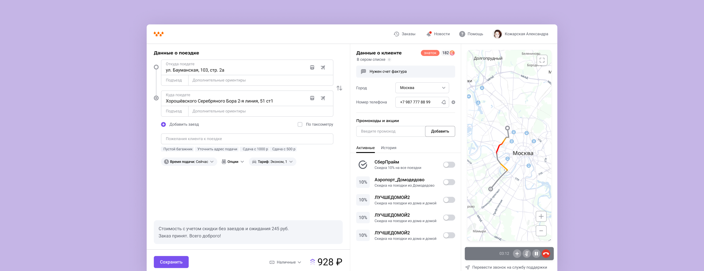
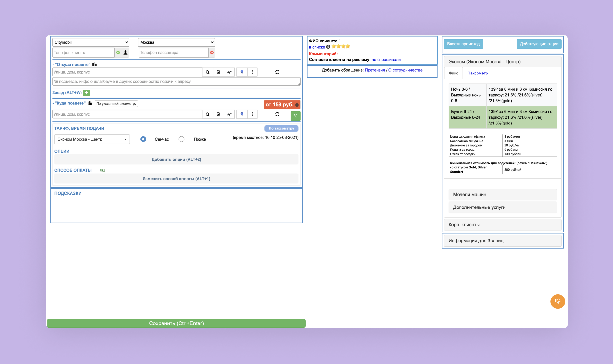
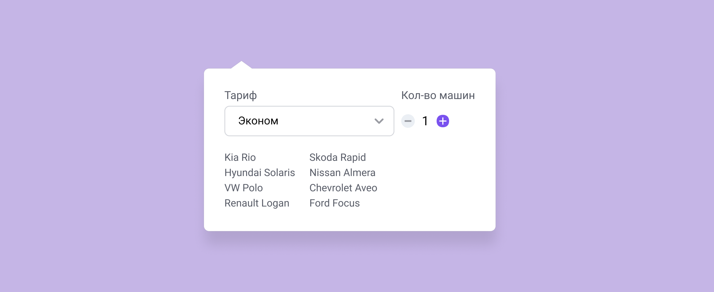
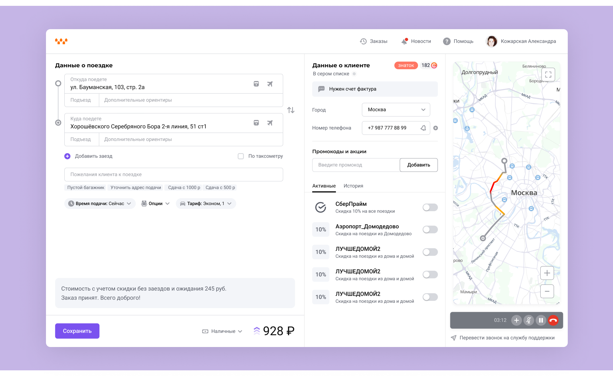
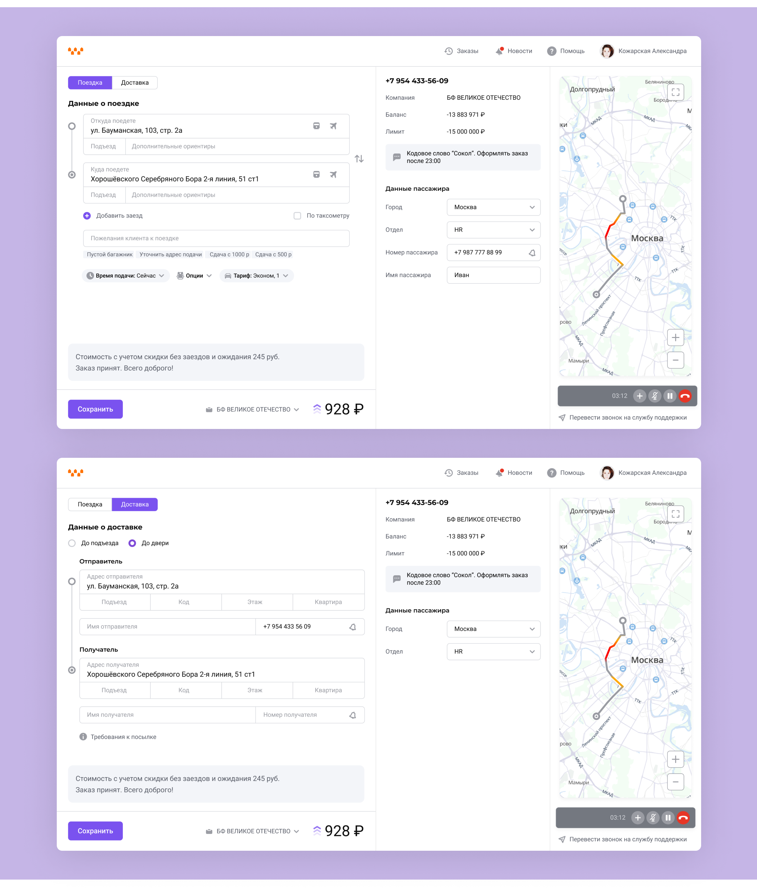

Operator's account Кабинет оператора
At Citymobil I designed a new interface for call-center operators taking incoming orders from clients. The team was me, my design lead, a product manager, and an engineer. The goal was to analyze the old tool and build a better one — cutting call duration and operator errors.
В Ситимобил я работала над новым кабинетом для операторов колл-центра, принимающих входящие заказы от клиентов. Команда состояла из меня, тимлида, продакт-менеджера и разработчика. Нужно было проанализировать старый инструмент и сделать новый — удобнее, чтобы сократить время звонка и уменьшить количество ошибок оператора.

The Problem
We wanted to understand how operators actually worked — which features they used most, and which parts of their script wasted the most time. After studying the operators' knowledge base, their comments, and sitting in on real calls, we surfaced this list of problems:
- Address search was unreliable. Operators often couldn't find the address in the autosuggest or on the map — sometimes because the address wasn't there, sometimes because they missed it in suggestions.
- Entering additional trip information was manual. Operators had to type in entrance number, notes for a third child seat, or multiple pets by hand.
- Operators frequently missed a client's outstanding debt — the amount didn't sum with the trip cost, and creating an order wasn't blocked.
- Many operators didn't know where to check client bonuses.
- Ordering several cars to one address wasted time — the operator had to place an order, duplicate it, re-enter the address, and repeat.
We then looked at usage data to see how often operators used each function. Some blocks took up lots of space and were barely used; some rarely-used options crowded the layout.
Сначала мы хотели понять, как операторы работают, чем они чаще всего пользуются и какие части их скрипта отнимают больше всего времени. После изучения базы знаний операторов, их комментариев, а также после присутствия на реальных звонках был сформирован список проблем:
- Проблемы с поиском адреса. Операторы часто не находили нужный адрес ни в саджесте, ни на карте — иногда потому что адреса действительно не было, иногда потому что не замечали его в саджесте.
- Проблемы с вводом дополнительной информации к поездке. Информацию о подъезде, о третьем ребёнке с детским креслом, о нескольких животных приходилось вводить вручную.
- Операторы часто не замечали информацию о долге клиента — сумма долга не суммировалась с суммой поездки, и возможность создать заказ не блокировалась.
- Многие операторы не знали, где смотреть информацию о бонусах клиента.
- Сценарий с несколькими машинами на один адрес отнимал много времени — оператору нужно было оформлять заказ, дублировать его, снова вводить адрес и так несколько раз.
После этого мы посмотрели статистику, чтобы понять, как часто операторы пользуются функциями программы. Стало понятно, что некоторые блоки занимают много места и по сути не используются, а много опций и пожеланий применяются очень редко.
The Process
The design had to account for the fact that support-service operators sometimes rotated onto the order-line. Their support tool had a new interface, so shared UI elements needed to stay consistent between the two products.
We removed everything unnecessary and simplified the main scenarios that operators struggled with.
В дизайне нужно было учесть, что сервисом также могут пользоваться операторы службы поддержки, которых периодически направляли работать на приём заказов. У них уже был новый интерфейс для работы поддержки, и было важно, чтобы общие элементы в интерфейсах совпадали.
Мы убрали всё лишнее и упростили основные сценарии, с которыми у операторов были проблемы.
The Solution
After research we mapped which blocks were high-value and which were noise, then rebuilt the core flow.

Key changes:
- A dedicated field for entrance number, so operators didn't have to squeeze it into "wishes".
- The most-used wishes surfaced as bottom tags, so operators didn't type them manually.
- Unused options were removed; remaining ones sorted by frequency.
- Multi-car ordering was possible without closing and duplicating the order.
We also moved client bonuses to a visible spot, removed a secondary phone and company name field that only mattered for corporate clients, and kept the map always visible instead of behind a toggle.

15 operators tested the design. Most of the flow worked, but we found new issues: child seat expected to be near "pets", tag placement below the wish input confused some, and tariff-switching + date-editing icons weren't obvious.

In the follow-up round we added text labels to icons and pushed frequent wishes back into the autosuggest so operators could add them any way they preferred. In re-testing the option search worked cleanly. We also finalized the layout for corporate clients.

После исследования мы разметили, какие блоки — ценные, а какие — шум, и перестроили основной флоу.
Ключевые изменения:
- Отдельное поле для подъезда, чтобы оператору не нужно было вводить эту информацию в пожелания.
- Самые часто используемые пожелания в виде тегов внизу, чтобы оператору не приходилось вводить их вручную.
- Убрали неиспользуемые опции, оставшиеся разместили в порядке частоты использования.
- Возможность заказать сразу несколько машин на один адрес — без закрытия и копирования заказа.
Информацию о баллах клиента вынесли на более видное место. Убрали дополнительный номер телефона и название компании — эта информация нужна только корпоративным клиентам. Карта теперь всегда на виду и не требует отдельного включения.
В тестировании участвовали 15 операторов. Большая часть работала как ожидалось, но выявились новые проблемы: операторы искали добавление питомца рядом с детским креслом, теги под полем пожеланий не всем были понятны, иконки смены тарифа и даты отложенной поездки казались неочевидными.
В доработке добавили к иконкам текстовые описания, а частые пожелания вернули в саджест — оператор может добавить их любым удобным способом. При повторном тестировании поиск опций не вызывал проблем. Также проработали макет для корпоративного клиента.